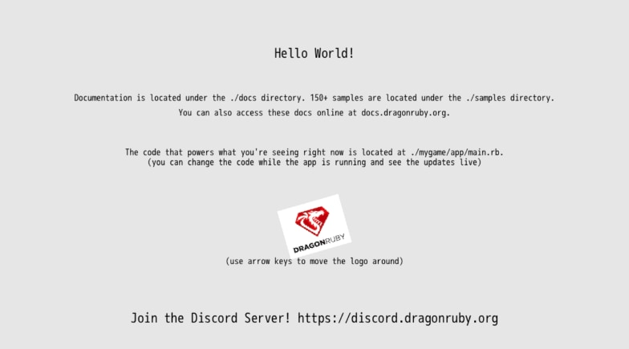
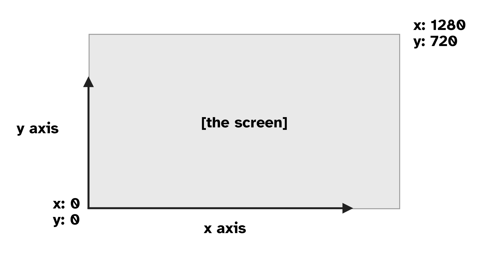
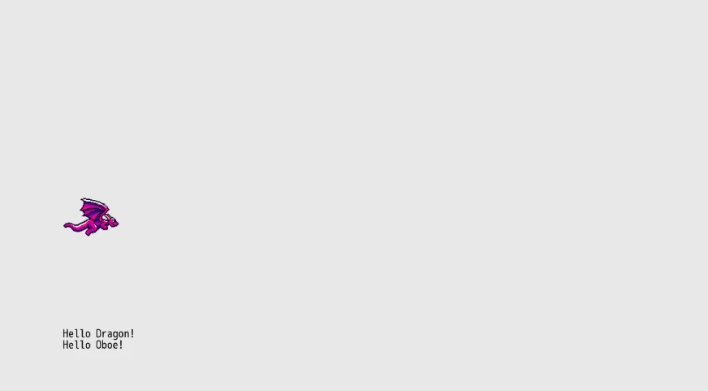
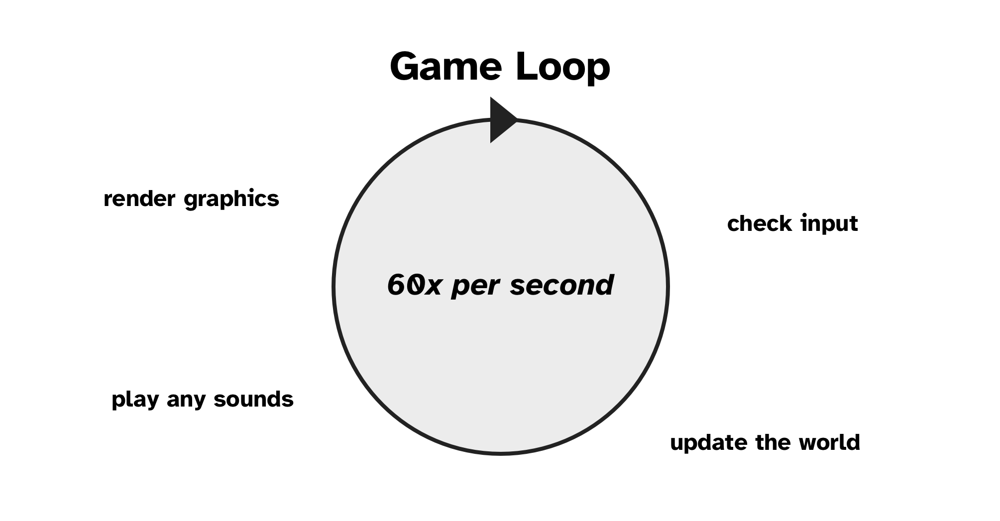

Hello Dragon!
We’ll start by rendering an image and some simple text on the screen. But first, we need to get our computer and DragonRuby Game Toolkit ready for developing games.
First Steps
- Download a code editor: Since you’ll be coding your game, you need a special text editor to write the code without any extra formatting that text editors like Microsoft Word add. Visual Studio Code is a great free editor. Download and install it. (Or use your own favorite editor.)
- Get DragonRuby GTK: You need to get a copy of DragonRuby GTK so you can use the engine. Buy it on itch.io and download the zip file for your operating system.
- Extract the DRGTK engine zip: In your computer’s file explorer, extract the engine zip file.
You’re ready to work on your game. Let’s get to it!
ProTip: don’t delete the zip file! You can unzip it again when the time comes to start working on your next game. It’s helpful to keep it around.
What’s in the Engine Zip
When you download DragonRuby Game Toolkit, it contains everything you need to build your game. There are no external dependencies to install or monkey with. You just use the provided files and start making your game.
Let’s go over the key files in the archive you just extracted:
dragonruby— the executable you’ll run to launch your game in development mode, your primary entry into the development flowdragonruby-publish— a command-line tool to help you easily build and publish your game online, don’t worry about this yet!samples/— a folder of example code that you can explore and run if you’d like, or just ignore for nowdocs/— the DragonRuby Game Toolkit docs for the version you’ve downloaded, extremely handy if you want to dive deeper than this bookmygame/🌟 — as the name implies, this is where the code, graphics, sound, and other assets live for your game; this is the primary folder you’ll be working inapp/— this is where your Ruby code goesmain.rb— this is the main file for your game code, don’t worry about the other one yet
data/— where you can put any data for your game, like level editor filesfonts/— where fonts go, duh!metadata/— configuration files for your game, we’ll do more here latersounds/— where music and sound effects gosprites/— where images go that will be rendered in the game; there are already some basic ones present
Don’t worry about the other files yet. Focus on the mygame/ directory, and, specifically, mygame/app/main.rb.
Start the Game
Launch the dragonruby file.
If you’re on macOS, right-click the file and select “Open”. You’ll need to ensure software from unverified sources can be run.
Here’s what gets displayed:

This isn’t a game… yet! But it is doing three key things:
- Launching an app window
- Rendering text
- Displaying and rotating an image
And you haven’t even written any code yet. Not a bad starting place.
DRGTK handles the boring stuff when it comes to making games—dealing with low-level APIs like graphics, sound, and the game window. We can instead focus on creating our game instead of, for example, figuring out how to save data in a way that’s compatible with Linux, Mac, Windows, Android, iOS, and the web.
An Overview of the Main Game File
Let’s take a look at what’s in mygame/app/main.rb. There’s a fair amount of code in there, so don’t panic. We’ll go through it in chunks.
module Main
def tick args
args.state.logo_rect ||= { x: 576,
y: 200,
w: 128,
h: 101 }
args.outputs.labels << { x: 640,
y: 600,
text: 'Hello World!',
size_px: 30,
anchor_x: 0.5,
anchor_y: 0.5 }
args.outputs.labels << { x: 640,
y: 510,
text: "Documentation is located under the ./docs directory. 150+ samples are located under the ./samples directory.",
size_px: 20,
anchor_x: 0.5,
anchor_y: 0.5 }
args.outputs.labels << { x: 640,
y: 480,
text: "You can also access these docs online at docs.dragonruby.org.",
size_px: 20,
anchor_x: 0.5,
anchor_y: 0.5 }
args.outputs.labels << { x: 640,
y: 400,
text: "The code that powers what you're seeing right now is located at ./mygame/app/main.rb.",
size_px: 20,
anchor_x: 0.5,
anchor_y: 0.5 }
args.outputs.labels << { x: 640,
y: 380,
text: "(you can change the code while the app is running and see the updates live)",
size_px: 20,
anchor_x: 0.5,
anchor_y: 0.5 }
args.outputs.sprites << { x: args.state.logo_rect.x,
y: args.state.logo_rect.y,
w: args.state.logo_rect.w,
h: args.state.logo_rect.h,
path: 'dragonruby.png',
angle: Kernel.tick_count }
args.outputs.labels << { x: 640,
y: 180,
text: "(use arrow keys to move the logo around)",
size_px: 20,
anchor_x: 0.5,
anchor_y: 0.5 }
args.outputs.labels << { x: 640,
y: 80,
text: 'Join the Discord Server! https://discord.dragonruby.org',
size_px: 30,
anchor_x: 0.5 }
if args.inputs.keyboard.left
args.state.logo_rect.x -= 10
elsif args.inputs.keyboard.right
args.state.logo_rect.x += 10
end
if args.inputs.keyboard.down
args.state.logo_rect.y -= 10
elsif args.inputs.keyboard.up
args.state.logo_rect.y += 10
end
if args.state.logo_rect.x > 1280
args.state.logo_rect.x = 0
elsif args.state.logo_rect.x < 0
args.state.logo_rect.x = 1280
end
if args.state.logo_rect.y > 720
args.state.logo_rect.y = 0
elsif args.state.logo_rect.y < 0
args.state.logo_rect.y = 720
end
end
end
Open this file yourself in Visual Studio Code. Go ahead and do that: New Window > Open > [select the folder on your computer with the engine in it]
Here’s the very first line:
module Main
That’s a Ruby module named Main. Don’t worry about modules yet. DragonRuby looks for a module called Main to find the entry point of your game. For now, treat that line (and the matching end at the bottom of the file) as boilerplate. We’ll cover modules properly later in the book.
Inside the module is this:
def tick args
This defines a method called tick and passes in a parameter called args. args is short for arguments and is provided to us by DragonRuby GTK.
Methods are reusable pieces of code that you can call to do something over and over again. Think of methods like verbs; they’re actions. Methods are a foundational building block that allows for code reuse.
Let’s say you wanted to give a friend a cookie 🍪, you’d define a method called give_cookie and pass in the friend as a parameter. The friend then has a method called eat that we call, passing in a parameter of cookie.
def give_cookie(friend)
friend.eat("cookie")
end
You’d then call that method like:
francis = Friend.new
give_cookie(francis)
Note: methods in Ruby have optional parentheses. You can use them or leave them out when defining and calling your methods. These are the same:
def give_cookie(friend)
friend.eat("cookie")
end
def give_cookie friend
friend.eat "cookie"
end
I’m an agent of chaos and use both styles throughout the book. Gotta keep ya’ on your toes!
Wait, how’d we get talking about cookies and friends? Okay, back to the code above.
The next chunk handles outputting text to the screen:
args.outputs.labels << { x: 640,
y: 600,
text: 'Hello World!',
size_px: 30,
anchor_x: 0.5,
anchor_y: 0.5 }
Your eyes might be melting a little bit. But don’t worry, wipe that melted bit of eye away and focus! It’s pretty intuitive once you get the hang of it.
Remember args from above? The parameter that’s passed into tick? Well, you can call methods on it! This allows you to interact with the game engine.
args has a method called outputs that represents the data that gets rendered on the screen. You access it with args.outputs. Neato! labels is a method of outputs, see how the . chains things together?
The << is called the shovel operator. It lets you push data into a collection. labels is the collection we’re shoveling data into because we want to render some text.
And then the code within the curly braces {} is a hash, a collection of named values. Each key (the bit before the :) describes what its value means. So x: 640 says “put this label at an x position of 640.” y: 600 is the vertical position. text: is the actual text to display. size_px: is the font size in pixels. And anchor_x: / anchor_y: control which point on the label gets placed at (x, y). 0.5 means “center it,” 0 means “left edge / bottom edge,” 1 means “right edge / top edge.”
Don’t worry about memorizing every key. We’ll use them over and over and they’ll become second nature.
Gosh enough of this rambling, let’s adjust some code. Change the text from "Hello World!" to "Hello Dragon!" and save the file.
Did you see that? The game reloaded your code and changed the text to “Hello Dragon!” That was quick, wasn’t it? That’s one of the best parts of DRGTK—live reloading of your game code in the engine. This allows you to make changes to your game quickly, reducing the time between the cycles of writing your code and testing it.
Further down in the file is the chunk that draws the spinning logo:
args.outputs.sprites << { x: args.state.logo_rect.x,
y: args.state.logo_rect.y,
w: args.state.logo_rect.w,
h: args.state.logo_rect.h,
path: 'dragonruby.png',
angle: Kernel.tick_count }
args.outputs.sprites is like args.outputs.labels, but instead of holding labels, it’s a collection of sprites. It renders the "dragonruby.png" image at the x and y stored in args.state.logo_rect, sized w by h, and rotates it by passing Kernel.tick_count to angle. Don’t worry about tick_count for now. Just know that DragonRuby provides it for us, it keeps incrementing as the game runs, and feeding it to angle is a quick way to make the image spin.
The args.state you see used here is a place DragonRuby gives us to stash our own data. The ||= near the top of the file says “set logo_rect to this hash only if it isn’t already set”, so the rect gets initialized on the first frame and then is just read on every frame after.
The chunk at the bottom uses args.inputs.keyboard to move that rect around when the arrow keys are pressed. We’ll get to player input in the next chapter, so don’t sweat the details yet.
That’s it for what we get out of the box.
Screen Coordinates Explained
Let’s take a detour down Screen Coordinates Road. The x and y values are coordinates on the two-dimensional plane of the game window. Remember geometry? I barely do. But this is important, so don’t doze off on me yet. We’re only still in the first chapter!

DRGTK games are made up of a window that’s 1280x720 pixels in size. That’s 1280 pixels wide and 720 pixels tall. The rectangle of the game screen contains 921600 pixels, that’s those two numbers multiplied. Each of those pixels has a coordinate on the plane. It makes it easy to refer to a specific pixel by using its x and y position.
DRGTK starts 0, 0 in the lower left. So 1280, 720 would be the upper right. Note: This varies from most game engines, libraries, and tools, but it’s intentional to make it easier to think about gravity and follows the geometric 2D plane that is taught in mathematics.
It’s important to keep coordinates in mind, as we’ll be using them a lot when making our game. A major aspect of games is moving things around on the screen, which we do by changing their coordinates.
Our Own Hello
Back to making the game. Okay, yeah, you changed a string and it changed what was displayed. That’s neat. But let’s hit reset and do it ourselves.
I want you to delete the code in mygame/app/main.rb. Select it all and delete it. Yup, I know, the blank canvas is a challenge. But you need to start writing the code yourself in order to learn. So go ahead and type out each line below into your main.rb.
def tick args
args.outputs.labels << { x: 120, y: 120, text: "Hello Dragon!" }
end
You know what that does, right? Well, you saw it automatically reload in your game, so of course, you do! Note that we dropped the module Main wrapper for now. DragonRuby is happy to find your tick method at the top level, and it keeps the example tiny while we’re learning the basics.
Let’s greet our friend Oboe too.
def tick args
args.outputs.labels << { x: 120, y: 120, text: "Hello Dragon!" }
args.outputs.labels << { x: 120, y: 100, text: "Hello Oboe!" }
end
Wow, so many friends we’re saying hello to! The thing is… that code is a bit… duplicative. Let’s write our own method to clean that up:
def greet friend
"Hello #{friend}!"
end
def tick args
args.outputs.labels << { x: 120, y: 120, text: greet("Dragon") }
args.outputs.labels << { x: 120, y: 100, text: greet("Oboe") }
end
The new code refactors (changes the implementation of the code without changing the behavior) the original so that we can easily change the greeting in one place instead of many. This is a bit of a trivial example, but it shows how we can write our own methods in DRGTK to make our code better. Reusing code is fundamental for the rest of this book.
The "Hello #{friend}!" code does what’s called string interpolation. It takes whatever friend is, hopefully a name as a string, and inserts it. It’s pretty similar to this code: "Hello " + friend + "!", but quite a bit friendlier to use. The #{} tells Ruby to run any Ruby code within those curly braces.
Methods in Ruby return a value. Return values can then be used by the caller for whatever purposes are needed. In the example above, the return value is the string we built. Ruby returns the value of the last line of the method definition automatically. But you can explicitly return early with return, which can be useful if you want to end the execution of a method early.
Go ahead and change the greet method to:
def greet friend
"Hello #{friend}!"
1
end
Whoa! What happened to our greetings? Well, we changed our code and it now always returns 1, which isn’t what we want. It’s just an example to illustrate how that works. Go ahead and undo that change.
Let’s wrap up this chapter by displaying a sprite. In mygame/sprites/misc/ there’s a file named dragon-0.png. It’s a pixel art dragon made by Nick Culbertson that’s free to use. Pretty neat. Thanks, Nick!
def greet friend
"Hello #{friend}!"
end
def tick args
args.outputs.labels << { x: 120, y: 120, text: greet("Dragon") }
args.outputs.labels << { x: 120, y: 100, text: greet("Oboe") }
args.outputs.sprites << { x: 120, y: 280, w: 100, h: 80, path: 'sprites/misc/dragon-0.png' }
end

That’s some pretty fine code for the first chapter. We’ve got text and an image displaying. We learned about methods too. Don’t worry if it’s not all making total and complete sense. You’ll understand more with time. Remember, be patient with yourself.
Game Loop Explained
There’s a lot of magic that comes from DragonRuby Game Toolkit, where we can just write def tick and magically have a game. What’s happening is that DragonRuby Game Toolkit takes the code in mygame/app/main.rb, finds the tick method, and then runs a loop that calls it 60 times every second until the program closes. This loop is referred to as the Game Loop.
When programming games, any number of things are happening at one time. Enemies are moving, images are being displayed, math is being calculated, input is being handled, etc. The loop runs over and over again, accounting for any changes in the state of the game. This is similar to how screens on devices work—they refresh so many times a second, so fast that it’s barely perceptible to the human eye.
Within the game loop, we’ll keep track of everything that’s happening, update state, and render text and images. It’s important to begin to think about things in a loop, as it influences timing and code structure.

The game loop will begin to feel more natural over time, but for now, remember this: DRGTK runs the tick method 60 times every second.
If you’re familiar with games, you may know about frames per second (FPS). That’s how many frames are rendered in a given second. 60 FPS is known for its smoothness and is often a target of many games. In DragonRuby GTK, the 60 ticks per second can be thought of as the same as your game running 60 frames per second (FPS).
What’s Next
Let’s get the player dragon moving around on the screen when we press certain keys. Player input is foundational to making games and a great next step.